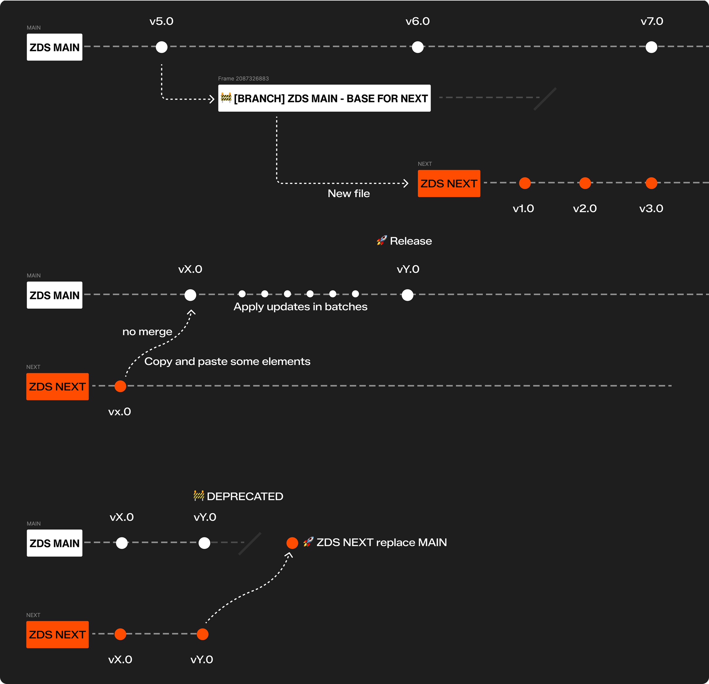
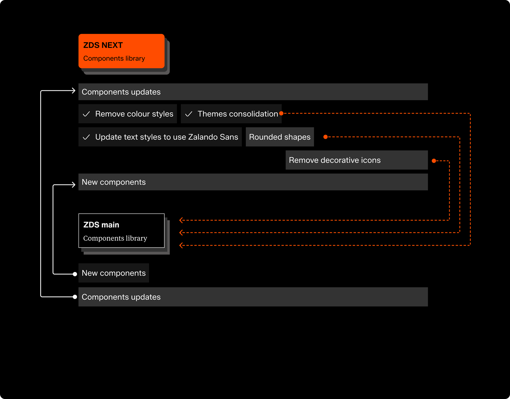

Figma components, plugins and trainings
My Figma tooling work
This is a collection of different work around Figma. From adaptive and responsive components, managing libraries versions and Figma plugins.
My role, achievements and outcomes
I led the work setting our ZDS figma libraries, tokens (variables, components properties, etc.) I put in place a changelog and a branching process for our updates and explorations. I also set up a plan to integrate future versions of the library and a migration plan without touching the current one so it won’t break our consumers experience.
I created a plugin to migrate from figma colour styles to variables. And also a plugin to swap an update our tokens version following our style dictionary repository.
I also set up our typography variables to allow the 200% mode to emulate text resizing so our designers could test this accessibility feature in advance.
Finally, I led the Figma training during 3 seasons for the Zalando design community where I level up product and content designers to make the most use of Figma advanced features like Autolayout, Components, Variables and Prototyping. Now I’m part of the team recording vide training about these and other topics. These videos are part of an official training in Workday for our community. On top of this, I have done workshops about how to build Figma plugins and how to use AI tools like Cursor so designers cna build their own ideas having deep technical knowledge.
Figma plugins
3
Styles to variables, Tokens sync, Links organiser.
Recorded videos
12
I recorded videos for Figma training covering advanced features.
Designers trained
80+
I led a Level-up Figma training for product and content designers.
Migration plugin
Problem: Migrate styles to variables was a manual process that would consume hours form our designers day.
This tool helps migrating mocks using colour styles to variables (tokens). The plugin helped designers to save many hours of manual work and was widely used in the early days once we launched design tokens boosting their adoption from day one.
Tokens manager plugin
Problem: Keeping our design tokens in sync with our code repository was a challenging manual work. Having 8 modes for our 3 themes, making changes and updates was prone to errors, easy to miss and hard to track what was done. On top of that having multiple Style dictionary folders made impossible to keep track of the different versions.
This plugin sync our tokens repo with our variables in our Figma library. Beside this it can swap the tokens override to one of the different Style dictionary versions of our tokens that are currently used for the A/B tests that are set before the full launch the Zalando bran refresh. These dictionaries include new typography, updated and removed colours, adding border radius among other changes.
Figma advanced components
Problem: Outdated components would have multiple variants with not the right properties. Updating them to make use of tokens and 200% mode and a11y features was an impossible tasks.
I explored creating more flexible and fully responsive components. This was mainly done for some of our core e-comerce components like Product cards where we went from having 13 separate components with around 100 variants in total to 1 component and 6 variants. Also, our Showstopper component was redesigned to be fully responsive going form 48 to 4 variants.
ZDS Next library
Problem: We needed to reflect the incoming brand refresh features in our Figma libraries without disturbing the use ad state of the current library.
I setup the workflow to maintain a separate library and how the migration would happen. This was an invite access only to provide controlled teams explorations and to track adoption trough Figma analytics. This included communicating this to our design community, train my team on how to maitin the updates and do the migration once all the updates were released.
How features will be launched
Prev: Immersive dark mode & accessibility
This website was manually built with love and plain html, css & js.
No AI was used in the process.
Thanks for reading.